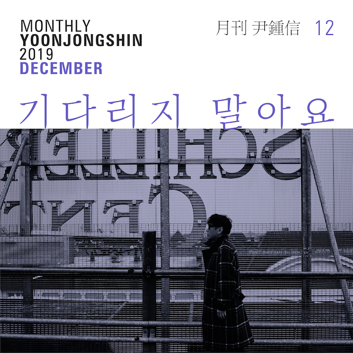

안녕하세요 라보엠입니다.
2019년 12월 16일, 윤종신은 "월간 윤종신" 프로젝트의 2019년 마지막 곡 "기다리지 말아요"를 발표했습니다. 이 곡은 윤종신이 작사를, 윤종신과 강화성이 함께 작곡을 맡았으며, 강화성과 박인영이 편곡에 참여했습니다. 이 노래는 윤종신의 '이방인 프로젝트'의 일환으로, 새로운 삶을 향한 그의 솔직한 마음을 담고 있습니다. 노래는 무작정 '떠남'을 결심하게 된 이유와 오랫동안 꿈꿔온 낯선 삶에 대한 기대를 직접적으로 표현했습니다.

기다리지 말아요 MV
"기다리지 말아요"는 윤종신 특유의 감성적인 발라드 스타일을 유지하면서도, 새로운 시도를 보여줍니다. 피아노 반주를 중심으로 한 편곡은 노래의 감성을 더욱 깊이 있게 전달합니다. 특히 LA에서 녹음된 IYP Orchestra의 연주는 곡에 풍성한 사운드를 더해줍니다.
2019 월간 윤종신 12월호 - 기다리지 말아요
[12월호 이야기]
“내가 모르던 내가 보이네…”
2019 월간 윤종신 12월호 ‘기다리지 말아요’는 11월호 ‘개인주의’에 이어 ‘이방인 프로젝트’를 준비하는 윤종신의 생각과 마음을 가감 없이 담은 곡이다. 무작정 ‘떠남’을 결심하게 된 이유와 오랫동안 꿈꿔온 낯선 삶에 대한 기대를 직접적으로 이야기한다. ‘익숙함에 고여 있고’, ‘추억 속에 갇혀’ 있으며, 되풀이되는 계절에 지쳤던 그에게 ‘떠남’은 필연적인 선택인 것만 같다. 다행히 그에게는 아주 오래된 꿈이 있었고, 그 꿈은 막연하지만 더 나은 미래를 기대하게 한다.
“‘이방인 프로젝트’는 저의 오랜 꿈이었어요. 왜 내가 ‘이방인’이 되고 싶은지 곰곰이 생각해보면, 지금의 삶이 고단하고 지쳐서 일단 떠나고 싶은 마음보다는 아주 오랫동안 간직해왔던 낭만적인 꿈을 실현해보고 싶은 마음이 더 크거든요. 정말 내가 해보고 싶은 걸 해보자는 뜻에 가깝죠. 물론 프로젝트를 준비하는 과정에서부터 일찌감치 타지에서의 생활이 결코 생각처럼 낭만적일 수만은 없다는 것을 알게 되었지만, 그래도 지금은 상상으로만 그리던 ‘이방인’으로서의 삶을 실현할 수 있어서, 그리고 그 삶을 제 노래 속에 그대로 담을 수 있어서 정말 좋습니다.”
‘기다리지 말아요’를 통해서 엿볼 수 있는 윤종신의 다음 1년은 ‘무정형’이다. 발길이 닿는 대로 걷고 머리가 닿는 대로 잠들며 마음이 당기는 대로 머무는 삶. 섣불리 규정하지 않고 함부로 계획하지 않으며 손쉽게 답을 구하지 않는 삶. 매일 매일 빽빽하게 들어차 있는 방송과 회사 업무, 그리고 음악 작업 스케줄을 충실히 소화해온 그에게 ‘이방인 프로젝트는’ 지난 삶에 대한 거대한 반동처럼 느껴지기도 한다. 실제로 윤종신은 편도 행 티켓을 끊었다.
“젊었을 때는 빨리 안정되고 싶었어요. 한 치 앞을 알 수 없고 늘 불안하니까 나무처럼 얼른 내 자리에 뿌리를 내리고 그 자리를 지키면서 살아가고 싶었죠. 아마도 그렇게 배워왔고 주변의 모든 사람들이 그렇게 살아가니 그게 맞는 거라고 생각했을 거예요. ‘안정’과 ‘정착’이 최선이자 정답이라고 굳게 믿어왔고 거기에 의문을 제기하지 않았던 거죠. 요즘은 바로 내일 일을 모른 채 살고 있어요. 눈 앞에 펼쳐지는 고민과 갈등을 곧장 수습하지 않고 가만히 바라보고 있어요. 정해진 것이 없는 생활과 흔들리는 생각들에 마음껏 설레하면서요. 이제 막 떠났을 뿐이지만 벌써 시야가 좀 더 넓어진 것만 같아요.(웃음)”
-
Music
Lyrics by 윤종신
Composed by 윤종신, 강화성
Arranged by 강화성, 박인영
Piano by 강화성
String Arranged & Conducted by 박인영
Performed by IYP Orchestra(LA)
Recorded by Jeff Gartenbaum@The Village Studios(LA), 정재원@STUDIO89
Mixed by 김일호@STUDIO89
Mastered by Stuart Hawkes(@Metropolis Studio)
Video
Directed by Gudals Kim
기다리지 말아요 가사
1.
오래된 꿈이었어 무작정 떠나가
언제 돌아올 지 모를
익숙함이 고여있어 추억에 갇혀있어
여지없이 오는 같은 계절
낯선 눈빛 속에 허기를 채우면
긴 밤을 보낼 잠자리
낯선 밤 거리는 저만치 날 경계하네
조금씩 곧 알아가겠지
br.
떠나왔던 그 곳을 물어 본다면
난 어떤 얘기부터 들려줄까
지쳤던 나의 날들과 색바랜 나의 추억들
그 어떤 하나도 싫어
chr.
그 아무도 없어서 그 하루의 피곤함만이
날 재우는 단 한 가지
답을 찾을 수 없었던 얽혔던 그 감정들이
이 밤의 물 한 모금만 못해
기다리지 말아요
나를 찾지 말아요 이젠
난 떠도는 의미없는 스쳤던 기억의 한 점
내일 눈이 떠지면 지워요
2.
향해 가는 그 곳을 물어 본다면
난 어딜 가고 있다 대답할까
사람들 나란히 앉아 서로 끄덕끄덕이는
아무도 못 가본 그 곳
그 아무도 없어서 그 하루의 피곤함만이
날 재우는 단 한가지
답을 찾을 수 없었던 얽혔던 그 감정들이
이 밤의 물 한 모금만 못해
기다리지 말아요
나를 찾지 말아요 이젠
난 떠도는 의미없는 스쳤던 기억의 한 점
내일 눈이 떠지면 지워요
노래의 가사는 윤종신의 내면을 깊이 있게 드러냅니다.
"오래된 꿈이었어 무작정 떠나가
언제 돌아올지 모를
익숙함이 고여있어 추억에 갇혀있어
여지없이 오는 같은 계절"
이 구절은 익숙한 환경에서 벗어나고자 하는 갈망을 표현합니다. 윤종신은 자신이 추억과 일상에 갇혀 있다고 느끼며, 새로운 경험을 갈망하고 있음을 노래합니다.
"기다리지 말아요 나를...
찾지 말아요 이젠
난 떠도는 의미없는
스쳤던 기억의 한 점
내일 눈이 떠지면 지워요"
후렴구에서는 과거의 자신을 뒤로하고 새로운 삶을 시작하고자 하는 결심이 드러납니다. 윤종신은 자신을 기다리거나 찾지 말라고 말하며, 과거의 기억을 지우고 새로운 시작을 하고 싶어 합니다.
윤종신의 새로운 도전
이 노래는 단순한 노래 그 이상의 의미를 갖습니다. 이 곡은 윤종신의 '이방인 프로젝트'의 시작을 알리는 신호탄이기도 했습니다. 윤종신은 이 프로젝트를 통해 자신의 오랜 꿈을 실현하고자 했습니다.
윤종신은 인터뷰에서 이렇게 말했습니다: "젊었을 때는 빨리 안정되고 싶었어요. 한 치 앞을 알 수 없고 늘 불안하니까 나무처럼 얼른 내 자리에 뿌리를 내리고 그 자리를 지키면서 살아가고 싶었죠. 요즘은 바로 내일 일을 모른 채 살고 있어요. 눈 앞에 펼쳐지는 고민과 갈등을 곧장 수습하지 않고 가만히 바라보고 있어요. 정해진 것이 없는 생활과 흔들리는 생각들에 마음껏 설레하면서요."
윤종신의 음악 여정
1990년 015B의 객원 보컬로 데뷔한 윤종신은 30년이 넘는 시간 동안 한국 음악계에서 중요한 위치를 차지해왔습니다. 그는 가수로서뿐만 아니라 작곡가, 프로듀서, 방송인 등 다양한 분야에서 활약하며 자신의 영역을 넓혀왔습니다. 특히 2010년부터 시작한 '월간 윤종신' 프로젝트는 그의 음악적 열정과 실험 정신을 잘 보여주는 사례입니다. 매달 새로운 곡을 발표하는 이 프로젝트를 통해 윤종신은 꾸준히 자신의 음악 세계를 확장해왔습니다.
맺음말
"기다리지 말아요"는 이러한 윤종신의 음악 여정에서 또 하나의 중요한 이정표가 될 것입니다. 이 곡을 통해 윤종신은 자신의 새로운 도전을 음악으로 표현하며, 동시에 듣는이들에게 변화와 도전의 메시지를 전달하고 있습니다. 윤종신의 이 노래는 단순한 노래를 넘어 한 아티스트의 진솔한 고백이자 새로운 시작을 알리는 선언문과도 같습니다. 이 곡을 통해 우리는 윤종신의 음악적 성장과 함께 그의 인생 철학을 엿볼 수 있습니다.